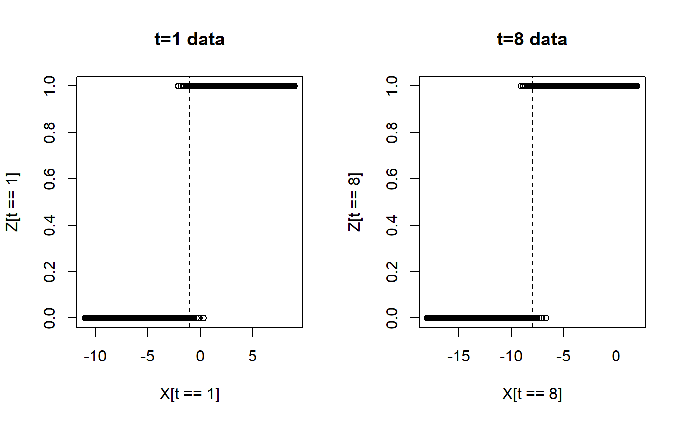

predict_tdl.RdPredicts using the incomplete-event-classifier.
predict_tdl(model, t, X, probs = FALSE)The fitted incomplete-event-classifier.
The age of events.
The event features.
If TRUE, probabilities are returned.
The predicted values using the model object. If prob = TRUE, then the probabilities are returned.
# Generate data
N <- 1000
t <- sort(rep(1:10, N))
set.seed(821)
for(kk in 1:10){
if(kk==1){
X <- seq(-11,9,length=N)
}else{
temp <- seq((-11-kk+1),(9-kk+1),length=N)
X <- c(X,temp)
}
}
real.a.0 <- seq(2,20, by=2)
real.a.1 <- rep(2,10)
Zstar <-real.a.0[t] + real.a.1[t]*X + rlogis(N, scale=0.5)
Z <- 1*(Zstar > 0)
# Plot data for t=1 and t=8
oldpar <- par(mfrow=c(1,2))
plot(X[t==1],Z[t==1], main="t=1 data")
abline(v=-1, lty=2)
plot(X[t==8],Z[t==8],main="t=8 data")
abline(v=-8, lty=2)

par(oldpar)
# Fit model
train_inds <- c()
for(i in 0:9){train_inds <- c(train_inds , i*N + 2*(1:499))}
model_td <- td_logistic(t[train_inds],X[train_inds],Z[train_inds])
# Prediction
preds <- predict_tdl(model_td,t[-train_inds],X[-train_inds] )
sum(preds==Z[-train_inds])/length(preds)
#> [1] 0.8776447